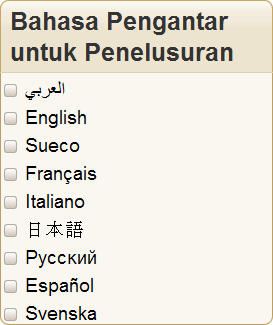
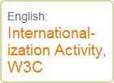

Answer
Dieses Problem kann vermieden werden, indem man sicherstellt, dass sich die Hintergrund- Grafik automatisch an die Länge des verknüpften Textes anpasst.
Im Folgenden werden wir kurz ein paar Lösungen aufzeigen, die bei diesem Problem helfen können. Es folgt die Darstellungen von möglichen Herangehensweisen. Weitergehende Informationen finden Sie im zitierten Originaltext. Wir werden das erste Beispiel etwas ausführlicher erklären, um den grundsätzlichen Gedankengang klarzumachen. Es gibt auch andere Herangehensweisen, um das Problem zu lösen. Das Ziel ist jedoch herauszufinden, wie man dem Text die nötige Flexibilität gibt, um sich in seiner Länge und Breite verändern zu können.
Wichtig zu beachten ist, dass die beschriebenen Lösungswege nur in Verbindung mit normgerechter Programmierung funktionieren. Sie wurden entwickelt, um die Zugriffszahlen auf Webseiten zu erhöhen. Der Hinweis ist deshalb wichtig, weil gerade minderwertige Internetseiten in vielen Fällen versuchen, die Menge des auf ihr dargestellten Textes zu vergrößern. Die unten erklärte Herangehensweise funktioniert auch bei Lokalisierungsproblemen.
Titel in Boxen mit festgelegter Breite
Dieser Lösungsweg beschäftigt sich mit der einer variablen Texthöhe. Eine Herangehensweise ist, eine Grafik zu benutzen, die drei oder vier Zeilen länger ist, als der Titel. Diese Technik wird in dem Buch Bulletproof Web Desing von Dan Cederholm beschrieben.
Wenn man eine Grafik in das Dokument einfügt und dabei mit der CSS-Background-Property arbeitet, wird nur der Teil der Grafik gezeigt, der auch der Länge des Titels entspricht.
Wichtig, die Grafik hat jetzt keine durchgehende Linie mehr unter dem Titel. Wir können diese Linie aber mit dem folgenden Code hinzufügen:
div.box h3 {
margin: 0;
padding: 6px 8px 4px 10px;
font-size: 130%;
color: #333;
background: url(img/h3-bg.gif) no-repeat top left;
border-bottom: 1px solid #E0CFAB;
}
Dieser Code sorgt für den gewünschten Effekt in der übersetzten Version

Natürlich muss für den unteren Teil der Box die gleiche Technik benutzt werden, da sich dieser Text ebenfalls in seiner Länge verändern kann.
Hier ein Beispiel, wie man diese Technik mit CSS umsetzt. Für Browser, die die notwendigen CSS-Eigenschaften unterstützen.
Registrierkarten
Diese Technik baut auf dem eben gezeigten einfachen Lösungsansatz auf. Sie zeigt, wie man mehrere grafische Flächen in einer Box zusammenfassen kann, obwohl sich deren Inhalt in der Breite ausdehnen wird. Diese Technik basiert auf dem Artikel "The Sliding Doors in CSS" von Doug Bowman. Die Grundidee ist die gleiche, wie im vorherigen Abschnitt, wenn auch etwas schwieriger zu programmieren. Jedes Tab hat zwei Hintergrundgraphiken:
 und
und  .
.
Die zwei Grafiken sind zwei Hintergrundbilder mit überlappenden Elementen. Nur die Teile der Grafiken, die als als Hintergund des Textes dienen, sind sichtbar. Das Resultat sieht aus, wie ein einzelner Hintergrund. (Im Artikel werden zusätzliche Codes für diese Tabelle, sowie die Linie am Ende der Registrierkarte im anderen Beispieles beschrieben.)
Die folgende Registrierkarte in chinesischer und italienischer Sprache wurden mit dem selben Code programmiert. Einzig der Text auf den Labels wurde geändert. Die Labels passen sich an den Text an, egal ob der ab- oder zunimmt.
Die gezeigten Beispiele wurden an die Seite angepasst - und sind somit keine Grafiken. Ihr Verhalten beim Vergrößern bzw. Verkleinern kann getestet werden, wenn man die Größe des Textes in Firefox verändert.
Wichtig zu beachten ist, dass wir an der rechten Seite der Registrierkarte etwas Platz gelassen haben. Es ist ratsam das zu tun. Sollte seitlich nicht genügend Platz vorhanden sein, ist es wichtig nach unten Platz zu schaffen. Die Wörter können so in die nächste Zeile ausweichen und die Spalte wird sich nach unten hin vergrößern.
Siehe dazu: ein Beispiel, wie man diese Technik mit CSS umstetzt. Für Browser, die die nötigen CSS-Eigenschaften unterstützen.
Boxen
Dieses Beispiel befasst sich mit Boxen, deren Größe sich in nach unten und zur Seite hin verändern können. Dazu beschreiben wir die Abwandlung einer Technik aus Dan Cederholm´s Buch: Bulletproof Web Desing, welche sich des "Sliding Doors"-Lösungsansatzes bedient.
Der XHTML-Quellcode für jeden Kasten ist gleich, lediglich der Text ist anders. Das gleiche gilt auch für denn CSS-Code.
Die Eigenschaft max-width wurde benutzt, um sicherzustellen, dass die Box in keinem Fall größer als 250 Pixel wird. Sie kann aber kleiner sein und (wie im japanischen Beispiel, dort entspricht die Schriftgröße der Standarteinstellung) die Grafiken, für die Linien und die abgerundeten Ecken, sind immer noch an der richtigen Stelle.
Der Code, der für XHTML und CSS benutzt wurde, kann dem Quelltext dieser Seite entnommen werden.
Ein mögliches Problem besteht aber weiterhin, wenn ein einziges Wort länger ist, als die Einstellung max-width und über den Rand der Box hinausragt. Mit der Standarteinstellung für die Schriftgröße auf dieser Seite, wird zum Beispiel das Wort für Internationalisierung (интернационализации) wahrscheinlich nicht in den Kasten mit der Einstellung max-width eingestellt auf 100px passen. In diesem Fall kann man zwei Dinge tun:
- Bemessen Sie die Einstellung für die
max-widthnicht zu knapp. Wir erinnern uns, dass nicht nur längere Wörter, sondern auch zusammengesetzte Hauptwörter den Quelltext verlängern können, indem sie einzelne Wörter zu einem ganzen Wort verbinden. Ein Beispiel dafür wäre die deutsche Übersetzung von "Input processing features" "Eingabeverarbeitungsfunktionen".
- Es muss auch sichergestellt werden, dass der Übersetzer weiß, wenn ein Text in eine Box mit festgelegter Größe eingesetzt wird. Außerdem ist es gut, weiche Trennzeichen (z.B. ­ oder ­) zu benutzen. Bei den meisten Browsern sind diese Trennzeichen unter normalen Umständen nicht sichtbar, wenn ein aber Wort zu breit für eine Box werden sollte, werden die neuesten Versionen der Browser das Wort teilen. Ein Trennzeichen wird am Ende der Zeile angezeigt. Siehe hier:

Siehe dazu: Ein Beispiel, wie man diese Technik in CSS umstetzt. Für Browser, die die nötigen CSS-Eigenschaften unterstützen.